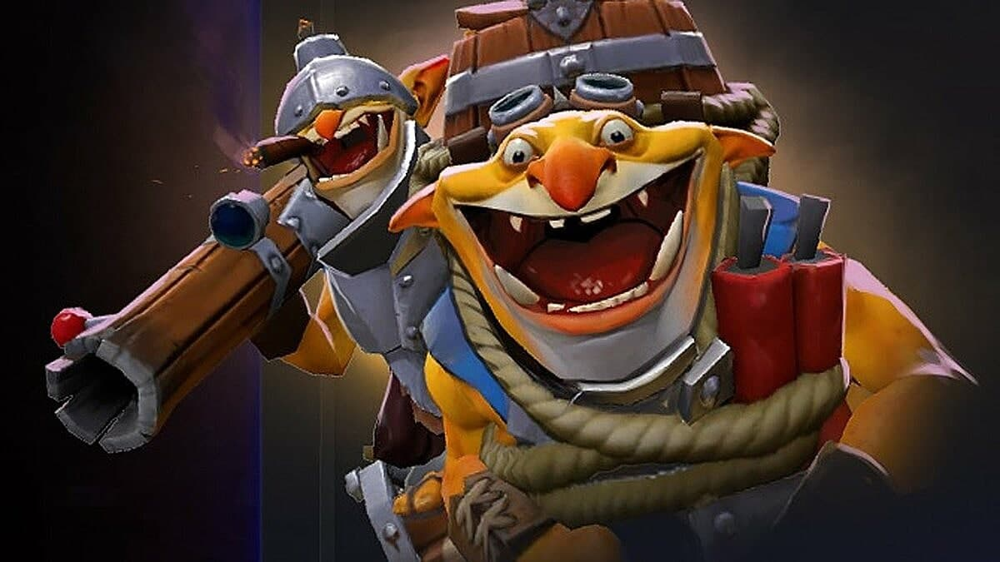

ТраВоМаН о грядущем реворке Techies: «Я нереально взбудоражен»
Стример Тимур ТраВоМаН Хафизов высказался о грядущем реворке
героя Techies из Dota 2. В видео на YouTube он отметил, что не
представляет, как разработчики изменят способности персонажа.
Тимур ТраВоМаН Хафизов:
«Не могли остаться незамеченными эти взрывы тронов,
взрывы на фонтане, "сосиски" по миду. Всё-таки кто-то там
у них [разработчиков] это дело увидел, и понял, что нужно это менять.
Вангую, что после реворка ничего такого реализовать уже не получится.
Я нереально взбудоражен. Мне интересно, что будет.
По сути, мне надо будет изучать нового героя, нового Techies.
Что будет в этот раз — страшно представить».